3D Manipulation · Depth Robustness · Commodity RGB-D
Noise-Invariant Spatial Encoding for 3D Manipulation Policies under Depth Corruption
Zhiyuan Yang1,2
Jiaju He1,2
Ruiteng Zhao1,3
Anqi Cheng2
Haiyue Zhu1,†
Kezhi Mao2,†
1 Singapore Institute of Manufacturing Technology (SIMTech),
Agency for Science, Technology and Research (A*STAR), Singapore
2 Nanyang Technological University (NTU), Singapore
3 National University of Singapore (NUS), Singapore
† Corresponding authors:
Haiyue Zhu and Kezhi Mao
CoRL 2026 Spotlight
02Abstract
Geometry is the interface — and the vulnerability.
3D manipulation policies derive actions from explicit scene geometry rather than
color images alone, enabling them to reason over metric distances, object relations,
and robot-scene reachability. This geometric interface is also a vulnerability:
commodity RGB-D sensors return missing measurements, boundary artifacts, and plausible
but wrong surfaces around transparent, reflective, thin, or textureless objects.
We study this failure under realistic depth corruption and observe a sharp
depth-noise cliff across modern 3D policies, even when
they are trained with matched noisy depth. This residual gap motivates a
spatial-encoding approach: corrupted depth becomes entangled with the token
coordinates and geometry features consumed by the action expert. We propose
Noise-Invariant Spatial Encoding (NISE), a 3D policy architecture
that learns trustworthy geometry features even facing imperfect depth. NISE uses
Geometric Cross-View Self-Supervision to shape shared
policy features with calibrated multi-view depth, and
Gaussian Marginalized 3D Attention to carry position
uncertainty into deployed attention rather than treating every lifted token as exact.
Across simulated benchmarks with sensor-realistic corruption and real-robot tasks
involving transparent and reflective materials, NISE improves depth-noise robustness
while preserving clean-depth performance, supporting 3D policies designed for commodity
RGB-D deployment rather than clean-depth benchmarks alone.
Color is clean; geometry is not. Drag the divider: the color image of the
transparent test-tube scene is unambiguous, while the raw depth of the same
scene shows missing measurements and distorted surfaces concentrated exactly on the
objects the policy must grasp.
The same failure, a second scene. As the arm lifts the lid off a transparent
petri dish, the raw depth collapses on exactly the dish and lid the gripper
must track — holes and unreliable surfaces where the color image is perfectly clear.
03The depth-corruption cliff
When clean-depth assumptions meet real sensors.
Modern 3D manipulation policies convert RGB-D into point clouds or depth-lifted
tokens, yet they are developed and evaluated on clean simulator depth. Commercial
RGB-D sensors instead return structured corruption: missing measurements, boundary
artifacts, and plausible-but-wrong geometry, worst around transparent, reflective,
thin, and textureless objects.
Under realistic depth corruption, current 3D policies fall off a sharp cliff, the
fragility generalizes across visual backbones and action-generation mechanisms, and
training on matched noisy depth recovers only part of the lost performance.
NISE addresses this at the architecture level.
We model the corruption families that commodity depth sensors actually exhibit
— missing measurements (holes), boundary artifacts (edge bleeding), and
plausible-but-wrong surfaces — and evaluate at calibrated clean, mild, and
saturated levels. The presets bracket sensor statistics measured with RealSense
D405 and Azure Kinect; saturated is the stress-test endpoint.
The failure modes, on real depth
Three ways commodity depth fails — on the real sensor.
The same raw frame as above, now annotated. Hover, tap, or focus a corruption
family to glow exactly where it appears in the sensor’s own output. Two of
the three are detected directly from the depth; the third is an
illustrative call-out, since a plausible-but-wrong surface cannot
be flagged without ground truth.
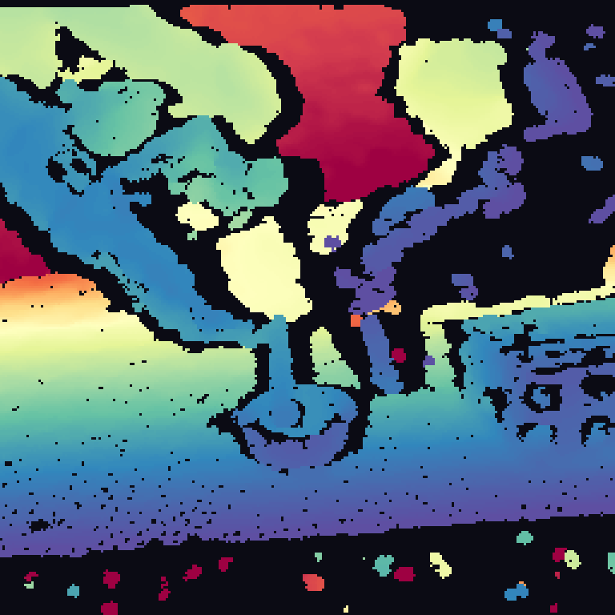
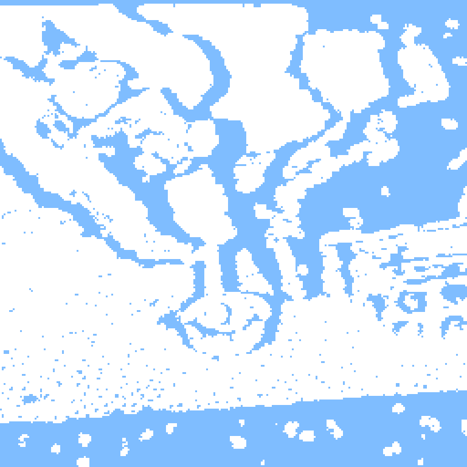
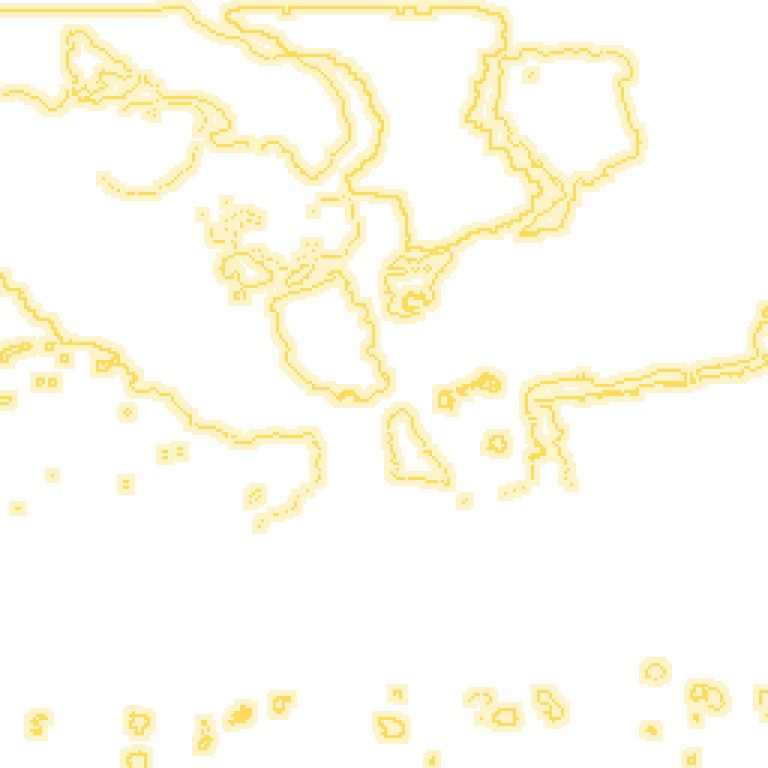
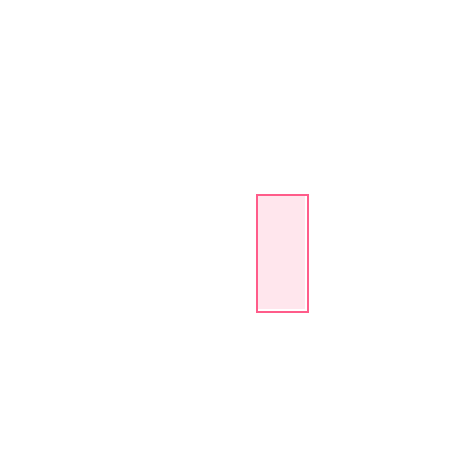
Raw depth · side ToFHover a mode
How we model it
A controlled diagnostic, not a simulator.
On benchmark depth, we inject these same structural failure modes at calibrated
severities, then measure how policies hold up. Sweep the severity, or peel the
corruption apart family by family — both are produced by the
exact pipeline used in the experiments, not a web re-creation.
Severity sweepClean → saturated
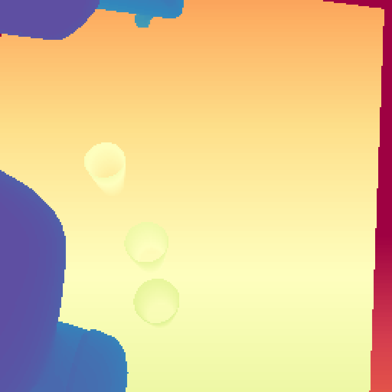
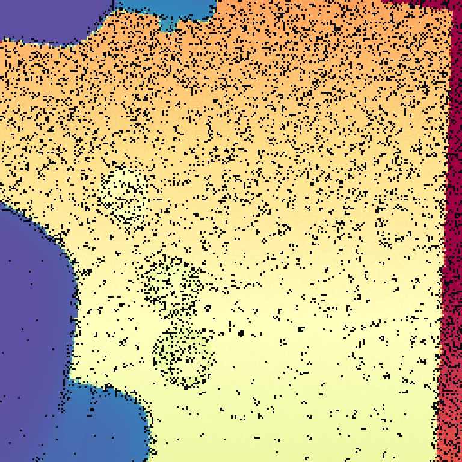
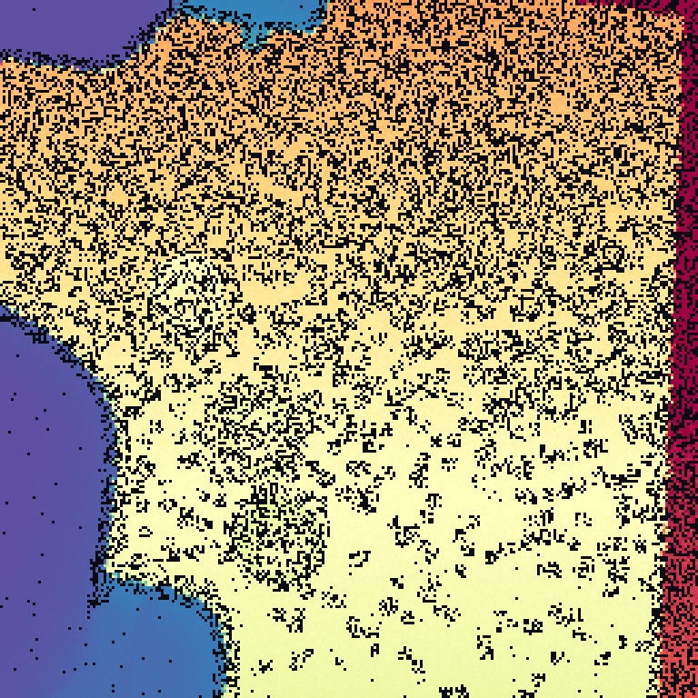
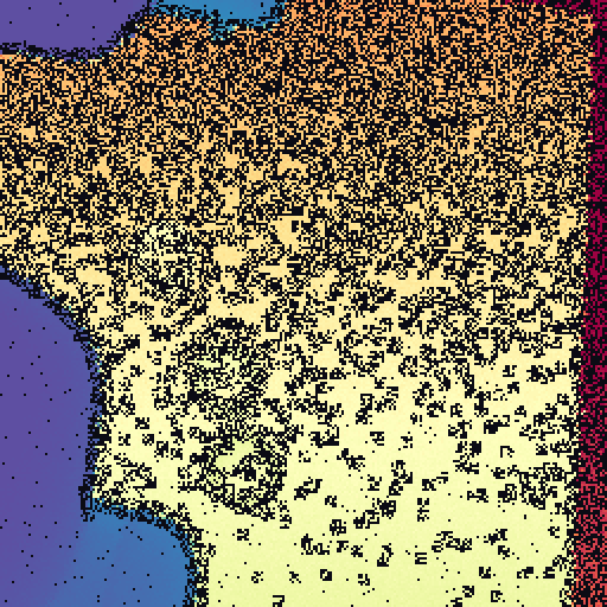
Clean
Clean
Mild
Moderate
Saturated
Calibrated severities on simulator depth. Mild and saturated bracket the
stress range we evaluate; the readout reports surviving valid pixels and depth error.
Family build-upOne failure mode at a time
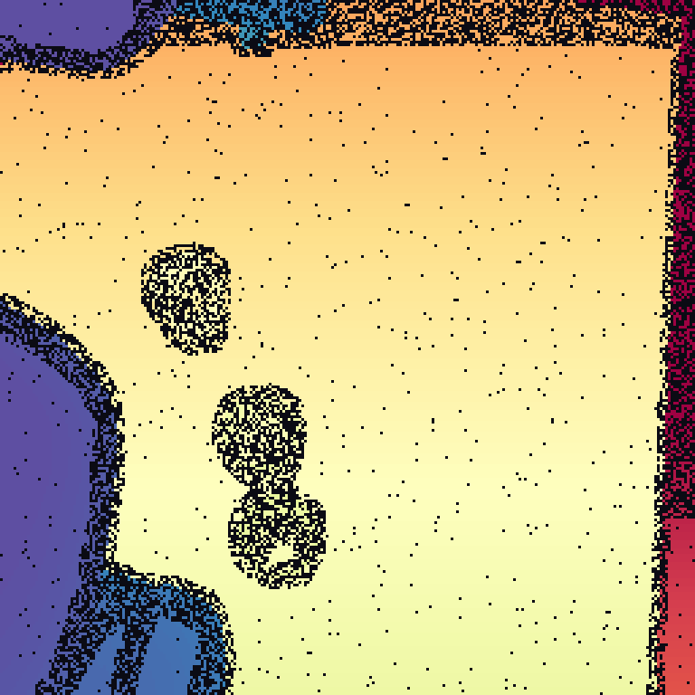
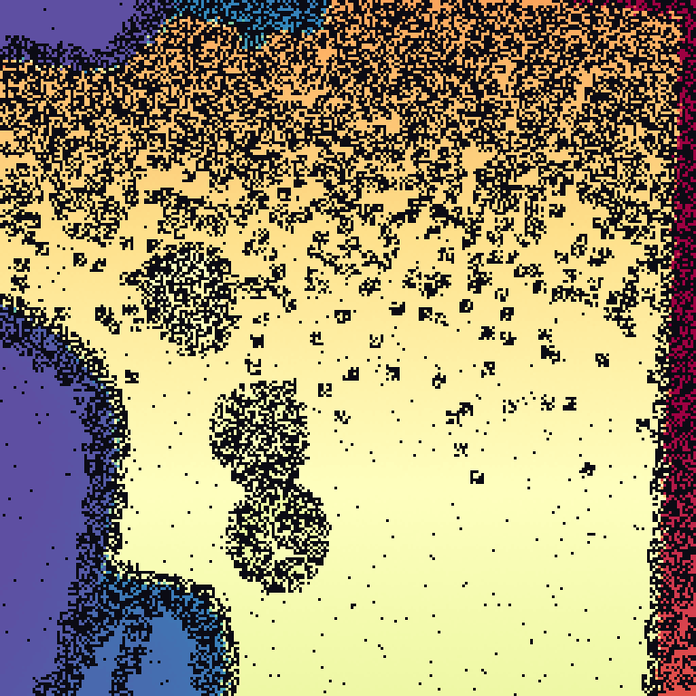
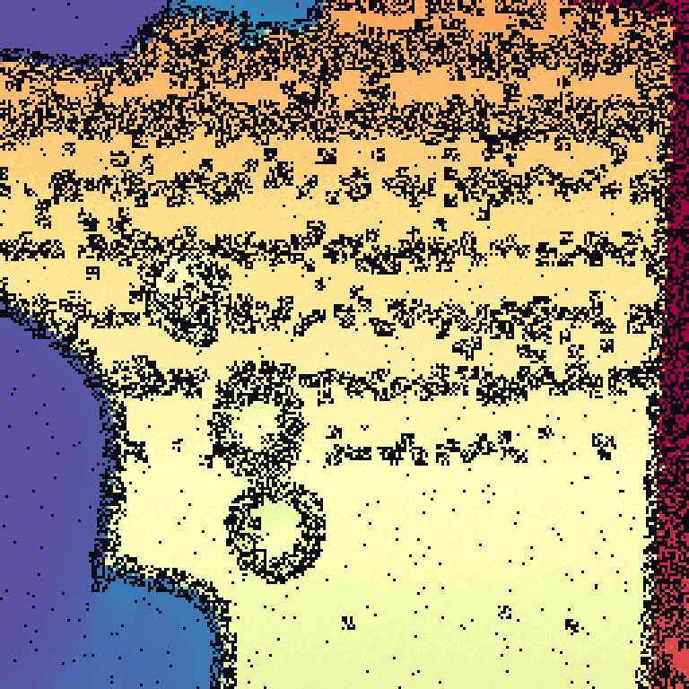
+ holes
The same three families, separable. Holes alone leave surviving depth
exact (0 mm error); edge bleed and wrong surfaces add the displaced,
phantom geometry that misleads a policy.
A controlled diagnostic, not a simulator. We inject the structural failure
modes real depth sensors are known to produce — missing returns, boundary
bleed, plausible-but-wrong surfaces — at calibrated severities to
probe policy robustness. We make no claim that it replicates any specific
sensor. We compare NISE with six baseline architectures (3DDA, RVT-2,
SAM2Act, DP3, FlowPolicy, and ManiFlow) across two benchmarks (RLBench
and MetaWorld), and test transfer to real robots under naturally occurring
depth corruption.
04Method — NISE
Features that stay stable when the depth is wrong.
The thinking
What a 3D policy needs is geometry features that stay stable when the
underlying depth is imperfect. That implies two moves: shape the shared features toward
view-consistent geometry during training
(GCVSS), and let the deployed attention carry how much
to trust each lifted token’s position
(GM3A).
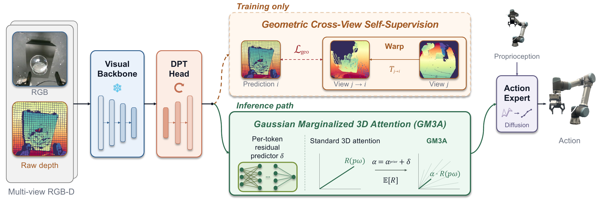
NISE framework. Per-camera RGB-D is encoded by a frozen visual backbone (ViT)
and a trainable DPT-style head into a shared spatial feature map. NISE acts on this
shared map: during training,
Geometric Cross-View Self-Supervision attaches a
cross-view geometry head to encourage view-consistent geometry in the same features
consumed by the policy; at deployment, this head is removed.
Gaussian Marginalized 3D Attention remains in the
deployed policy and carries per-token coordinate uncertainty into 3D attention, so
lifted tokens influence action features according to their spatial reliability.
GCVSSTraining-time
Geometric Cross-View Self-Supervision
The cross-view geometry head learns from calibrated multi-view
depth to encourage view-consistent geometry in the shared policy features. It needs
no clean-depth ground truth and is removed at deployment.
GM3ARetained at inference
Gaussian Marginalized 3D Attention
A per-token residual predictor adjusts positional attenuation
around an analytic Gaussian sensor prior. Regularization anchors these learned
adjustments to the prior, so uncertain coordinates influence attention according
to their spatial reliability.
GCVSS · the supervision signal
Two noisy views, one geometry.
GCVSS needs no clean-depth ground truth. Both cameras are noisy and neither
one alone pins the geometry; their cross-view agreement is the signal. Watch
the second view lock it in.
Co-registeredOne camera is weak; two lock it
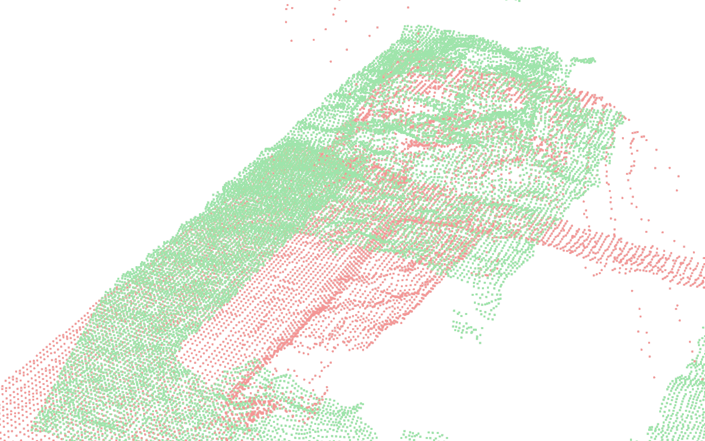
D405 alone · sensor RGBweak · one-sided
Camera of origin · Petri dishD405 · wristKinect · side-top
Drag to orbit
01Primary cloud · sensor RGB
02One-sided geometry
03+ Kinect · geometry locked
Cross-view warpWarp one view into the other
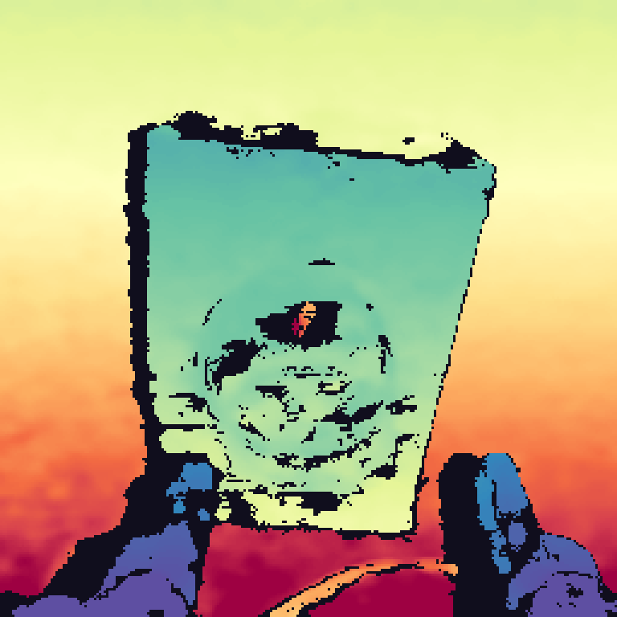
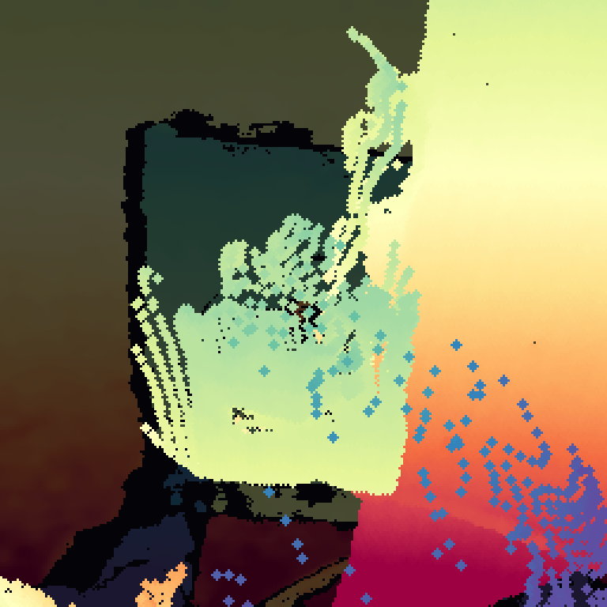
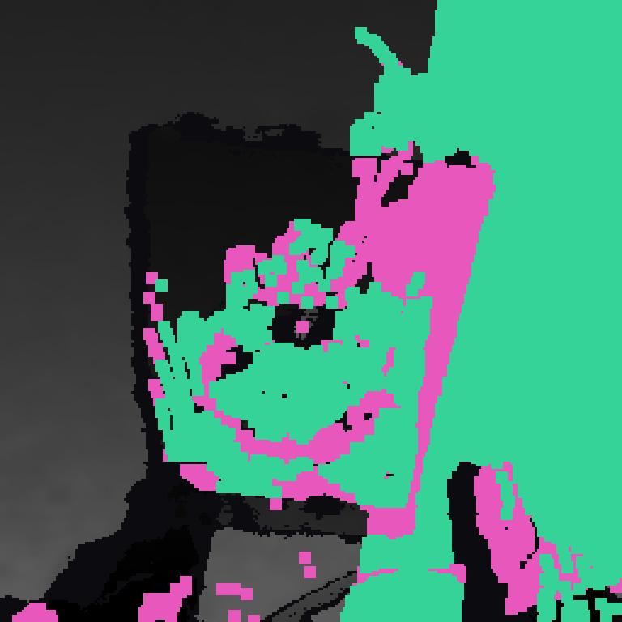
Kinect warpedD405 actual
Drag ↔
Both views are noisy, and there is no clean depth to copy from. One camera
alone sees a thin, one-sided shell and cannot pin the geometry; the second
viewpoint closes the missing faces and locks it. Because the two cameras
carry independent noise on the same surfaces, their cross-view
agreement is a learnable target — GCVSS supervises it Noise2Noise-style, with
no clean-depth ground truth required. Right: warping Kinect into the D405
frame, the warped depth lands on the actual depth across those shared surfaces.
GM3A · the dampening field
Trust geometry by its reliability.
Conceptual illustration of the mechanism
Depth error grows with range — and worsens on transparent, reflective,
and boundary geometry, exactly where a gripper makes contact. GM3A derives a
Gaussian attenuation prior for uncertain token positions
(αprior = exp(−σ²ω²/2)): reliable coordinates keep
their high-frequency geometric phase, uncertain ones are dampened. A learned
per-token residual adapts these coefficients. Watch the procedure unfold on
the real grasp scene below.
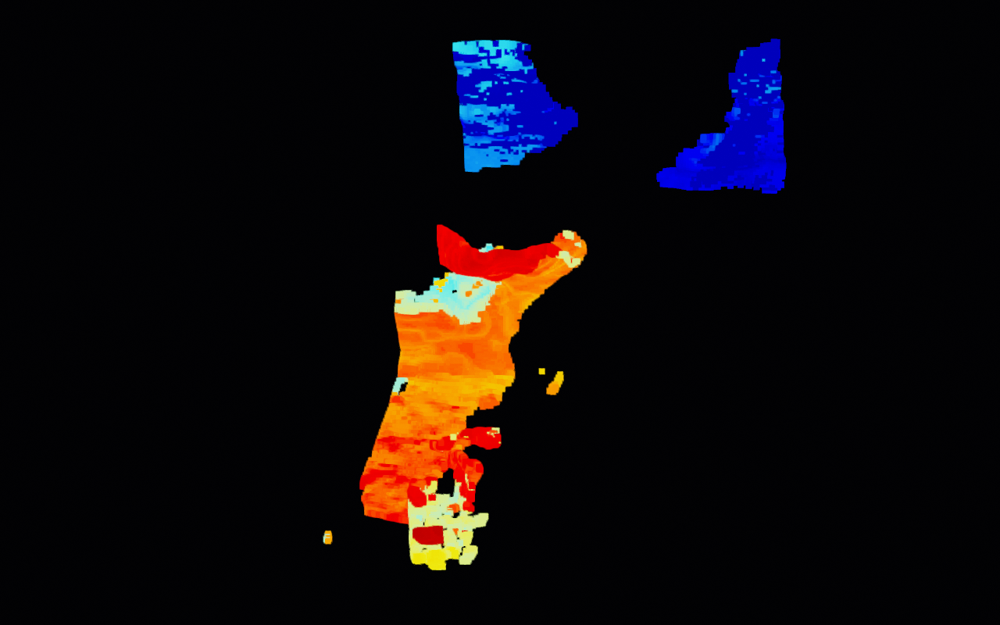
Step 01 of 05Exact points — vanilla 3D attention treats every coordinate as exact.
Reliability, not certainty. The procedure is a conceptual illustration
of GM3A. The sensor prior — each token’s position uncertainty under the
camera’s range law — is real; the per-token adaptation on transparent and
boundary geometry illustrates what GM3A is designed to learn as a residual on top
of that prior. GM3A dampens brittle high-frequency phase where geometry is
uncertain — it does not reconstruct hidden surfaces — so corrupted depth steers
the action less and the policy leans on trustworthy structure.
Ablation · mild noise
Under noisy-depth training and mild-noise evaluation, the frozen-ViT+DPT control reaches
75.5%; adding GCVSS and GM3A together raises it to
85.7%. GCVSS provides the main representation
gain; GM3A adds complementary gains once the features are shaped.
05Results — simulation
The baselines fall. NISE holds.
Sweep test-time depth from clean to saturated and the cliff appears: matched
noisy-depth training only softens the descent. NISE stays near the top across the same
sweep, preserving a clear margin into the stress-test endpoint.
What the policy consumes
A 3D policy sees this geometry — not the scene.
This is a real RLBench PerAct-18 frame (stack cups), back-projected
to the point cloud a 3D policy ingests, after our
mild depth-corruption model. Even at mild sensor noise,
edges and thin structures drop out and points jitter off the true surface
(floaters): the policy must act on this. Drag to orbit; toggle to the clean
reference to see what shifts.
The geometry a 3D policy actually consumes. A real RLBench PerAct-18
frame (stack cups, front workspace camera) under
our mild depth-corruption model — the same model swept in
§3. Even mild noise drops edges and scatters floaters; toggle to the clean
reference to see the same scene before corruption. And here is what that
corruption does to every policy ↓
Task-averaged success under clean, mild, and saturated depth corruption (Table 2).
Boxes show mean ± one standard deviation across three independent training
runs. All rows use noise-aware training; on RLBench, 3DDA, SAM2Act, and NISE
share an equal-probability mixture of clean, mild, and saturated depth.
06Results — real robot
Transparent and reflective, on real hardware.
We take NISE off the benchmark and onto two robots, with the exact object classes that
break depth: glass, gloss, and thin metal.
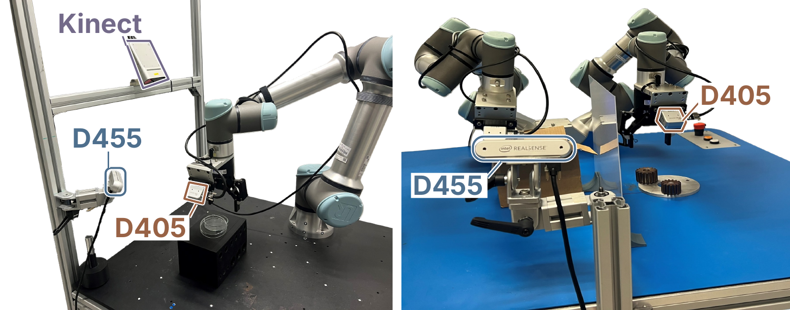
Real-robot setup. Single-arm UR5e (left) and bimanual UR3e (right).
Camera labels identify Azure Kinect and RealSense D455/D405.
Per-task success rate across both robots. Error bars are Wilson 95% confidence
intervals over 30 trials per task and method. For every task, NISE clears the best
baseline by a wide margin.